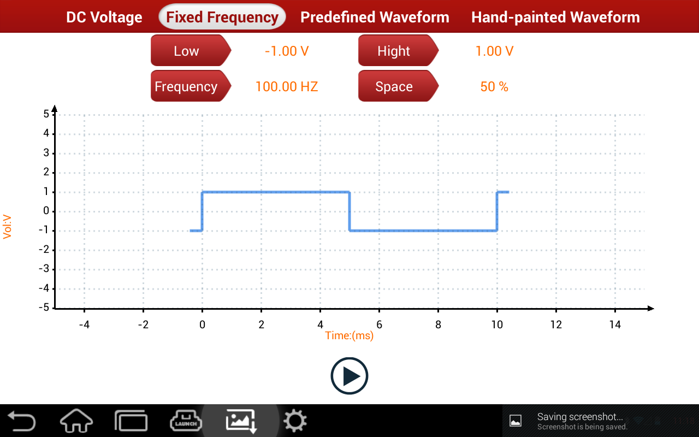

It simulates square signals with pulse frequency of 0.1~15kHz, voltage range of -5V~+5V and duty cycle of 10%~90%. On its interface, users can set signal's frequency, duty cycle, high level and low level. Text at the top of the grid displays set value of current analog signal.
See below imagepicture:
|  |
Function button: Click each button, it prompts modification widget for high level, low level, duty cycle and frequency. Adjust output of corresponding value or edit textbox value via "+""-" buttons.
Start (Stop): It starts/stops fixed frequency analog output.